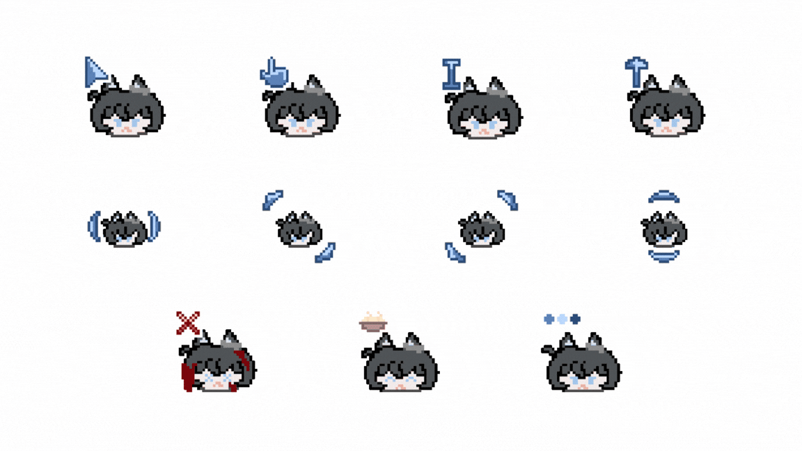

The other side
Ramsey,
personally.
Hobbies, interests, and whatever else is going on.
01 — Personal Analytics
Numbers
about me.
02 — Drawing
Drawn between
debugging sessions.

Loading recent drawings…
03 — Video Editing
Footage,
but shorter.
Loading footage…